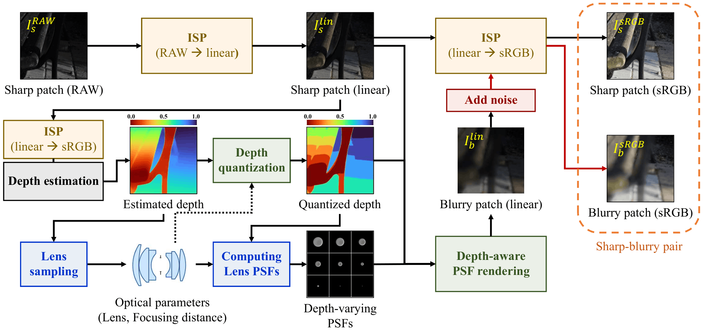
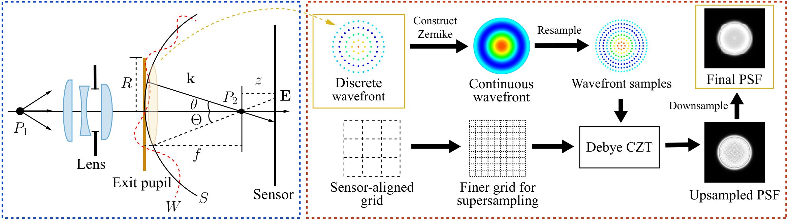
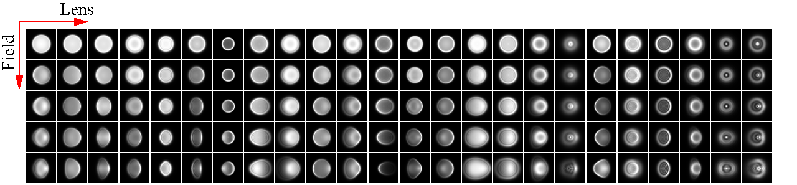
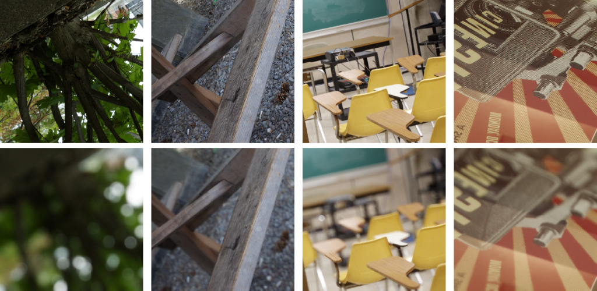
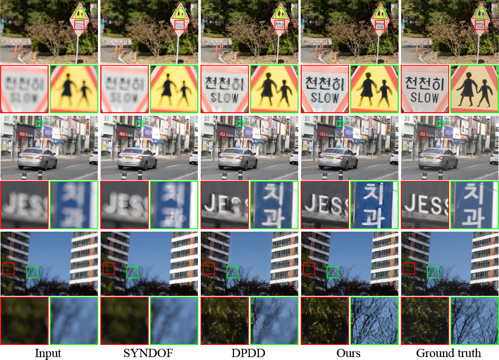

Defocus blur degrades fine image structures and limits visual perception, which can adversely affect downstream vision tasks. Although recent deep learning deblurring methods have achieved strong performance, their effectiveness depends on training data and often degrades across cameras and lenses due to limited optical diversity and realism in existing datasets. In this paper, we propose a pipeline for synthesizing realistic defocus deblurring datasets for diverse compound lenses. It integrates efficient wave-optics PSF computation via Debye CZT propagation, depth-aware defocus rendering with occlusion handling, and blur synthesis in the radiometrically linear space with camera ISP simulation. This unified pipeline enables the scalable generation of photorealistic defocus datasets with diverse lens characteristics. Using our pipeline, we generate CLDefocus, a large-scale synthetic dataset containing lens-diverse defocus image pairs. We further analyze the limitations of real-captured defocus datasets and show that such imperfections can bias full-reference evaluation. Extensive experiments demonstrate that models trained on CLDefocus achieve improved cross-device generalization compared to models trained on existing real and synthetic datasets.

Overall blur synthesis pipeline. We use a simple image signal processor (ISP) model to simulate a realistic imaging process. We randomly sample a compound lens design and a focusing distance for each sharp patch. We then compute point spread functions (PSFs) to simulate defocus blur. We apply depth-aware blur to the sharp patch in the radiometrically linear space.

We develop a practical method for obtaining a large number of defocused PSFs from diverse compound lenses, which is a main technical contribution. We first trace rays through a lens and reconstruct a continuous wavefront function. We then simulate light propagation using the Debye diffraction formulation, accelerated with the chirp Z-transform (CZT). We call this method the Debye CZT. Thanks to its scalable computational cost and explicit sampling criterion, we can automatically generate a large number of PSFs for arbitrary lens designs.

Examples of PSFs for diverse lenses computed with the Debye CZT.

We generate a large synthetic dataset, dubbed CLDefocus, using our synthesis pipeline. It consists of 40,000/1,000/1,000 pairs for the training/validation/test splits. The sharp source images are taken from the DPDD dataset.

Qualitative comparisons of defocus deblurring using the NRKNet deblurring model.
We hope that you will further develop our methodology. There are many open questions that we have not addressed, including:
@misc{lee2026realisticcompoundlensdefocusblur,
title={Realistic Compound-Lens Defocus Blur Synthesis},
author={Yunkyu Lee and Woohyeok Kim and Sunghyun Cho},
year={2026},
eprint={2607.05837},
archivePrefix={arXiv},
primaryClass={cs.CV},
url={https://arxiv.org/abs/2607.05837},
}